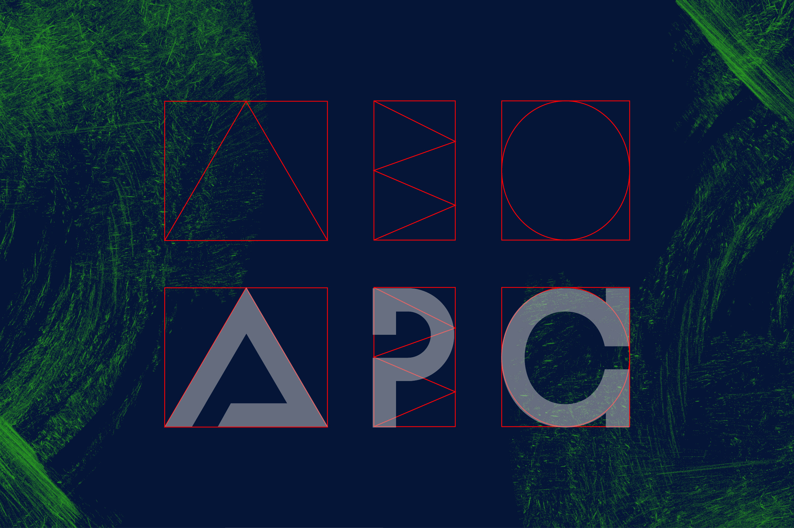
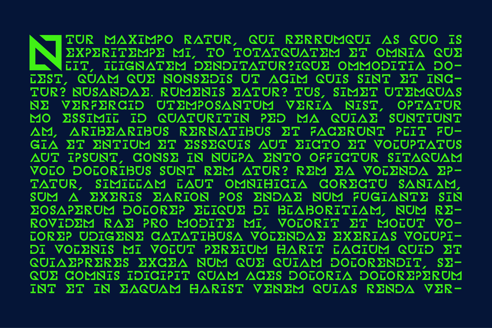
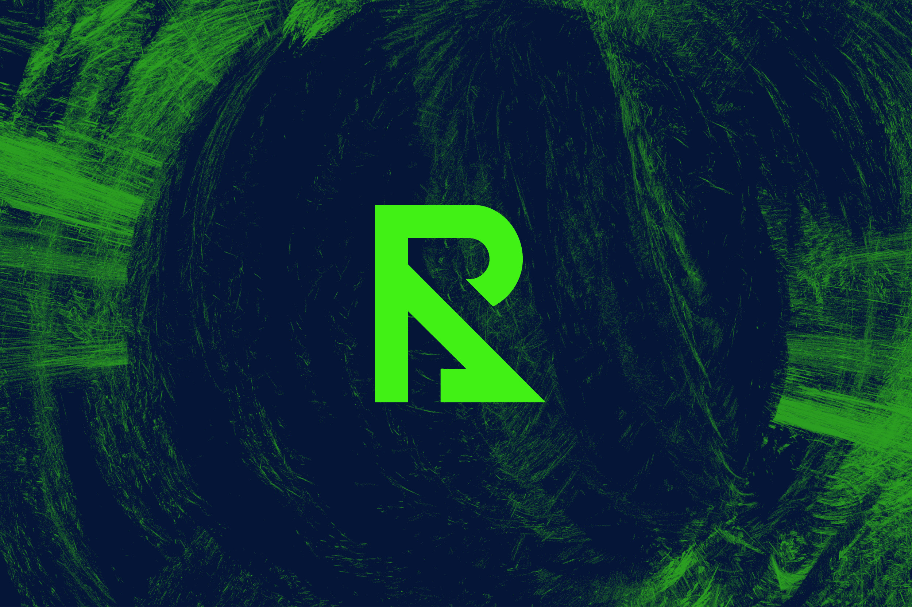
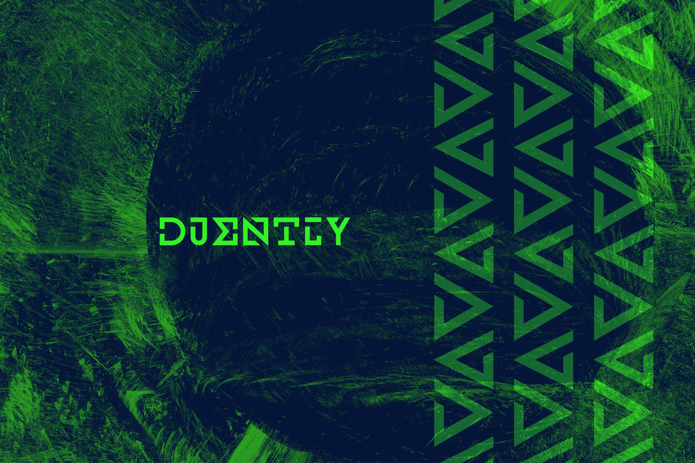
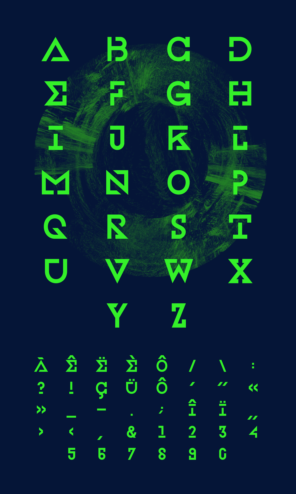
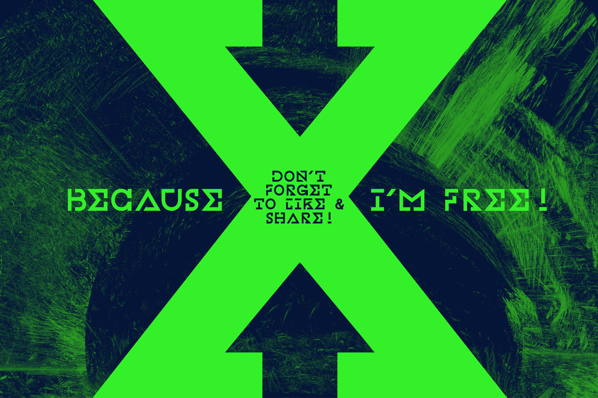

Neuro
Une typographie inspirée de la culture Drum & Bass et Metal Progressif. Les lettres sont inspirées de l’alphabet grec, pour dénoter une forme de rationalité propre à ces genres musicaux.







Une typographie inspirée de la culture Drum & Bass et Metal Progressif. Les lettres sont inspirées de l’alphabet grec, pour dénoter une forme de rationalité propre à ces genres musicaux.